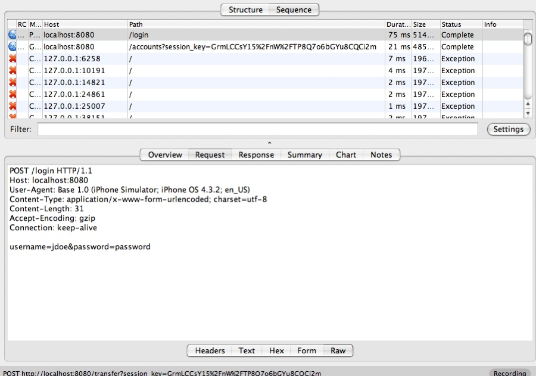
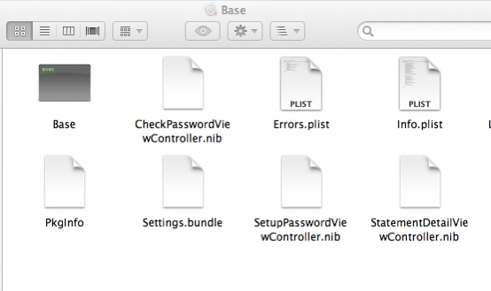

Lab 1 - Basic Encryption
The first lab, we'll use a proxy server such as Charles to proxy the ExploitMe mobile request. This guide assumes that you have configured your Xcode environment with ExploitMe Mobile for iPhone. If not, please ensure you read the guide on set up first.
Let's now launch both the LabServer and ExploitMe Mobile in the iPhone simulator. You should see a window like this.
In the first lab, we'll be inspecting iPhone network traffic to see how the app is sending bank traffic to LabServer.
Launch your favourite proxy and ensure that MacOSX is set up to use the proxy server. The iPhone simulator obey's the OSX settings for a proxy. You can configure it in Preferences > Network & Sharing > Proxies.
Ensure that your proxy is correctly accepting network traffic and then run the iPhone ExploitMe Mobile lab in the simulator. Once the simulator is running, login using the standard login and password jdoe/password for the user, or if you've already logged in before, enter your local password you configured on first run.
Below you can see our network traffic from the iPhone EMM app to our lab server.
It is clear that the application is using clear-text at this point and that HTTP traffic can be trapped and modified. This is often the first step to attacking any mobile application and if you've made it this far, you now are able to fully act as a man in the middle against any iPhone application.
In the following screenshot, we can see that EMM sends user credentials upon first entry to the application in clear-text. The username and password is clearly shown.

In most cases on the iPhone device itself, you'll want to browse the local file system on a Jailbroken device to access the application files. This will usually be stored within the Base.app folder on the device.

Within the simulator, it is a bit easier to access these files without jail breaking the device since the simulator stores any local files in the following directory where

~/Library/Application Support/iPhone Simulator/
If you're in OSX Finder, you'll have to right click > Show Package contents to see within the Base.app folder, or just use Terminal to access. You can see above all the iPhone files used by the installed ExploitMe Mobile application.
You can inspect and modify these files as you would normally on an iPhone device that is jailbroken.